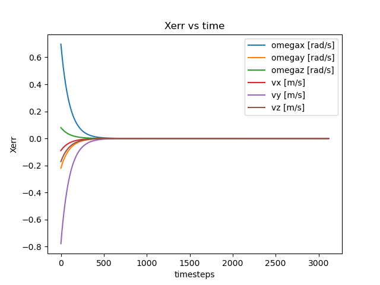

November, 2023
Mobile Manipulation Simulation
Kuka YouBot Kinematics & controls simulation.
Overview
This project implements a trajectory planner for the end effector of a Kuka YouBot mobile manipulator (mecanum wheel base with a 5R manipulator), and the necessary odometry and feedback control to perform a pick and place task. The implemented python code generates a csv output which is then played using CoppeliaSim. The physics engine simulates the interaction between the gripper and the cube.
System components
- Trajectory generation: Given the cube's initial and final configurations in the space frame, the end effector initial configuration and a grasping configuration w.r.t the cube we can generate a trajectory that performs the pick and place task. The motion is broken down into segments:
- Screw trajectory from initial pose to pick standoff
- Cartesian trajectory form pick standoff to pick
- Cartesian trajectory from pick to pick standoff
- Screw trajectory from pick standoff to place standoff
- Cartesian trajectory from place standoff to place
- Cartesian trajectory from place to place standoff
- Odometry: based on commanded joint speeds, we estimate the chassis and robot configuration at each timestep.
- Feedback control: a PI+Feedforward controller tracks the end effector error in positioning and generates the desired twist to minimize the error.
- Inverse kinematics: based on the desired end effector twist to follow the trajectory, the Jacobian pseudoinverse allows us to translate the deisred twist to joint speeds.
Implementation notes
Results
For the test presented in the video, the starting end effector position has an initial error of over 0.2m so we can see the operation of the controller.

Image 1 shows the error rapidly decreasing to zero for the trajectories tracking. The
manipulator is able to successfully pick and place the cube for each task. Parameter tuning was
an important part of getting the system to work, and trying different parameters yields more
aggressive responses for higher Kp’s.
References
Modern Robotics: Mechanics, Planning and Control, Kevin Lynch and Frank Park, Cambridge University Press, 2017